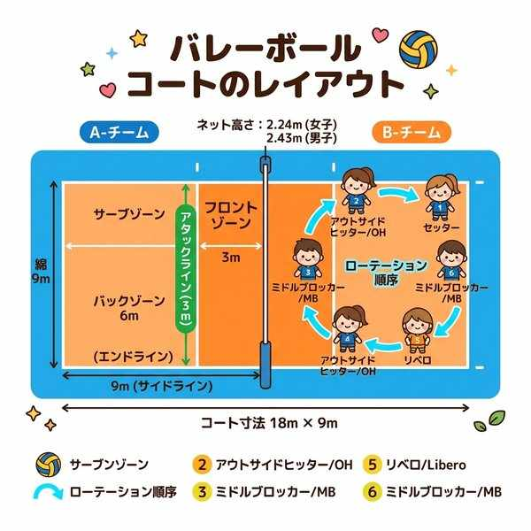
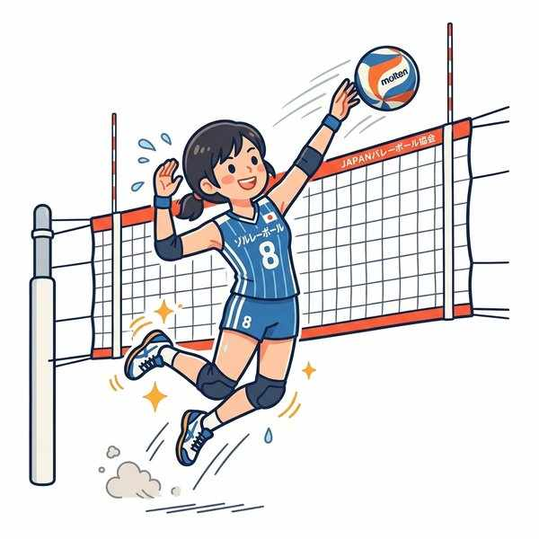
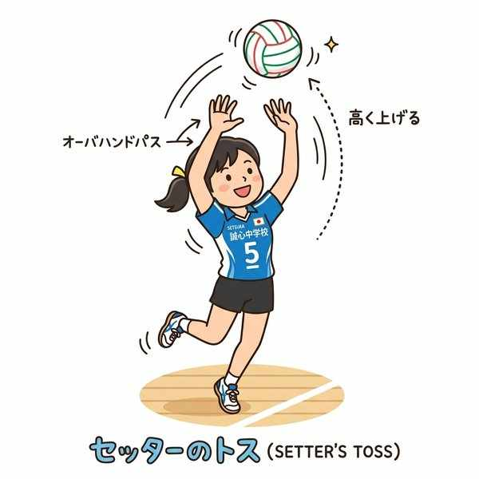
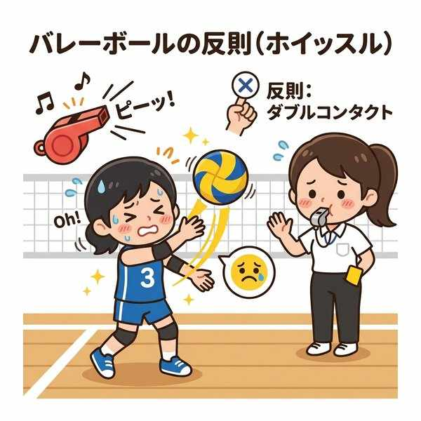

中学保健体育（体育実技）
単元19: バレーボール
バレーボールは、ネットを挟んで2つのチームが、手や腕を使ってボールを床に落とさないようにパスをつなぎ、相手コートに打ち返して得点を競い合う、チームワークが重要なネット型のスポーツです。ここでは、ポジションの役割、コートラインの定義、そしてテスト頻出の反則（フォールト）を整理します。
1. プレイヤーの役割とポジション

前衛・後衛のポジションとローテーション
- セッター：スパイク（アタック）を打つスパイカーに向けて、打ちやすいようにボールを高く綺麗にコントロールして上げる（トスする）司令塔の役割。
- リベロ：守備専門の特別なプレイヤー。
- 特徴：コートへの出入り（交代）が自由にでき、回数に制限がありません。また、他の選手と見分けがつくように異なる色のユニフォームを着用します。攻撃的なプレー（サーブ、スパイク、ブロックなど）は一切行えません。
- ローテーション（6人制）：新たにサーブ権（サービス権）を獲得した際、チーム全員がコート内のポジションを時計回り（右回り）に1つずつ移動するルール。
2. 基本的な技術とプレー

アタッカーのスパイクと守備のブロック
- サービス（サーブ）：ラリーを開始するため、エンドラインの後ろ（サービスゾーン）から相手コートに打ち入れるプレイ。
- スパイク：ジャンプして、相手コートにボールを鋭く強く叩きつける攻撃方法。
- ブロック：相手のスパイクに対して、前衛の選手がネット際でジャンプして両手を出し、ボールを防ぐ（跳ね返す）プレイ。
- オーバーハンドパス：顔の前や頭の上で、両手の指先を使ってボールを柔らかく弾くようにパス（トス）する技術。
- アンダーハンドパス：両腕をまっすぐ揃えて、ボールを下から弾き上げるようにパス・レシーブする技術。強いスパイクや低いボールを拾うのに適しています。
3. コートの各ラインと区域

トスを上げるセッターとコンビネーション
- エンドライン：コートの一番後ろの境界線。
- アタックライン：センターラインから平行に3m離れたところに引かれているライン。
- フロントゾーン：センターラインとアタックラインに囲まれた、ネットに近い3mの区域。後衛の選手は、このフロントゾーン内からはジャンプして（ネットより高い位置から）スパイクを打つことはできません。
4. テストによく出る主な反則（フォールト）

オーバーネットやタッチネットなどの反則行為
バレーボールはボールを持ってキープできないため、タッチやコンタクトに関する反則が多数存在し、テストでの記述や判別問題の宝庫です。
| 反則の名称 | どのような反則か（ルール上の定義） | テスト対策のポイント |
|---|---|---|
| ダブルコンタクト （ドリブル） |
1人の選手が、連続して2回ボールに触れてしまう反則。 | ※ブロックの接触の直後などは、連続して触っても例外的に反則になりません。 |
| フォアヒッツ （オーバータイム） |
ボールを相手コートに返すまでに、味方チームが連続して4回ボールに触れてしまう反則（※3回以内で返さなければならない）。 | ※味方のブロックの接触回数は、3回のカウントに含めません。 |
| ホールディング （キャッチ） |
パスやレシーブの際にボールを「持ったり」「つかんだり」して、明らかにボールが一瞬静止したと判定される反則。 | 指先や腕にボールが乗ってしまうと取られます。 |
| タッチネット | 競技中に、選手の手や体、衣服がネットに触れてしまう反則。 | スパイクやブロックの際に起こりやすい反則。 |
| フットフォルト | サーブを打つ瞬間に、足がエンドラインを踏んでいたり、ラインを越えてコート内に入ってしまう反則。 | サーブが打たれた瞬間に判定されます。 |
🔥 定期テスト対策・暗記のコツ
① アタックラインの距離「3m」
「センターラインからアタックラインまでの距離は 3m」です。この3mという数値はフロントゾーンの幅を示すもので、ルール記述問題で非常によく狙われます。
② 「フォアヒッツ」と「ダブルコンタクト」の違い
「チームで4回触る ➔ フォアヒッツ（4回のヒット）」、「個人で連続2回触る ➔ ダブルコンタクト（2回の接触）」。それぞれの定義を英語の意味と合わせて覚えましょう。
③ リベロのユニフォームの色
「リベロは、他の選手と異なる（違う）色のユニフォームを着用する」というルールがあります。これにより審判や観客が、守備専門であるリベロの素早い出入りを視覚的に判別できるようにしています。